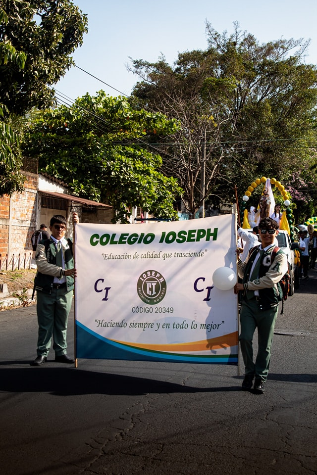
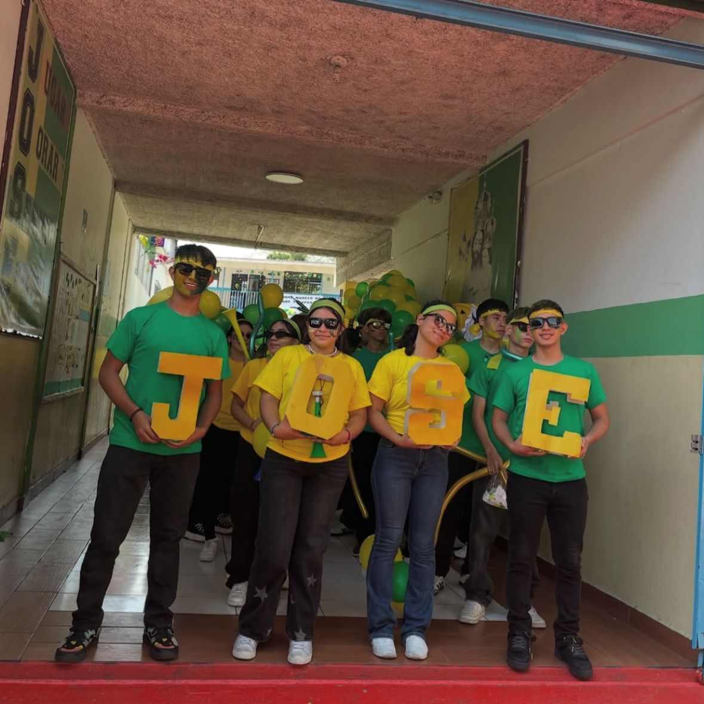
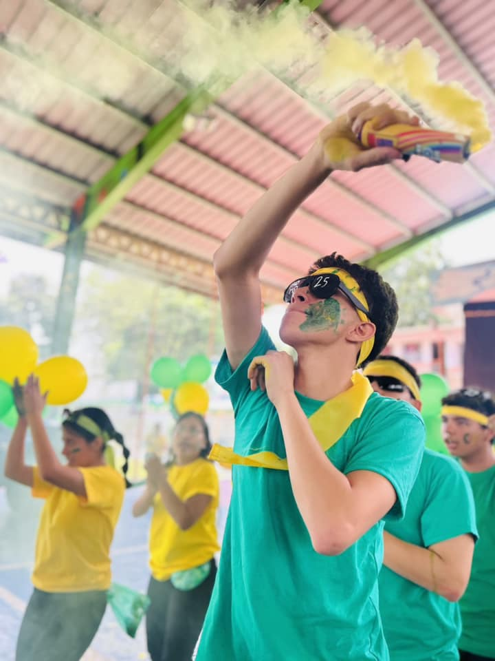
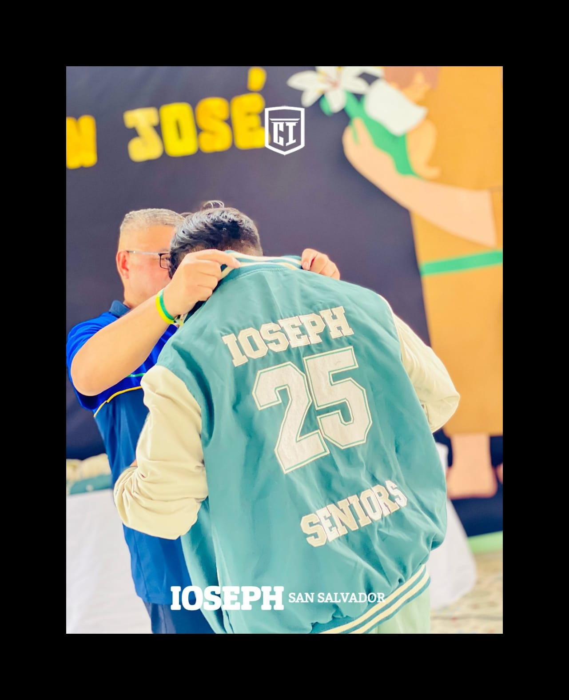
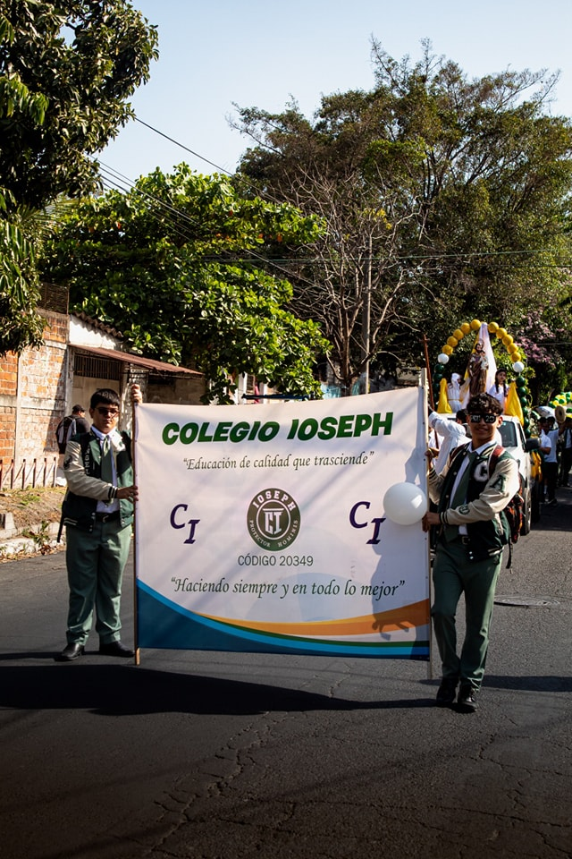
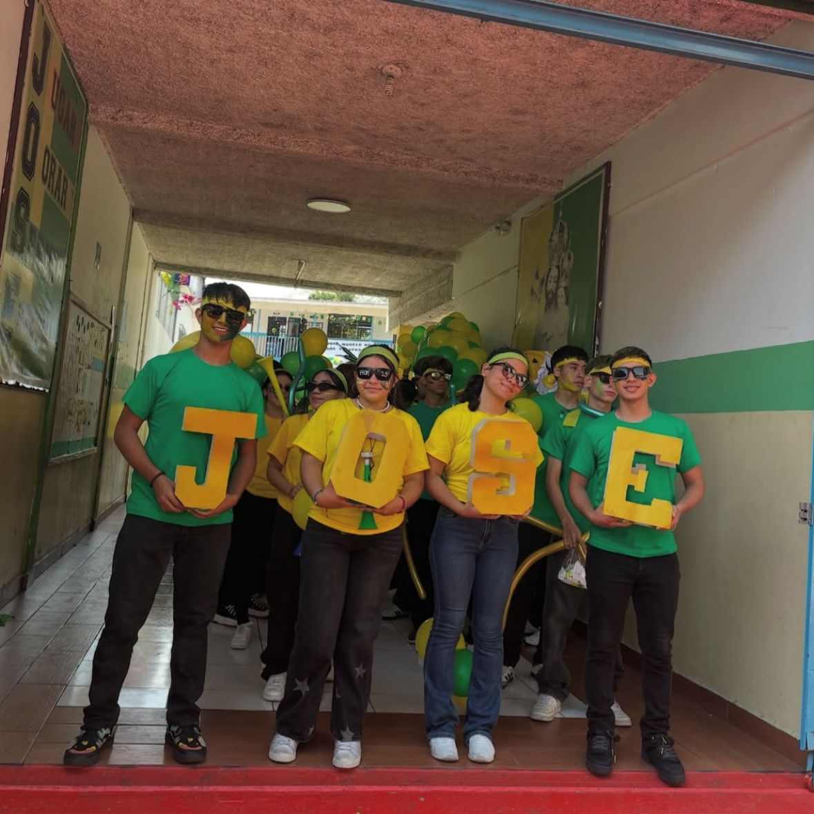
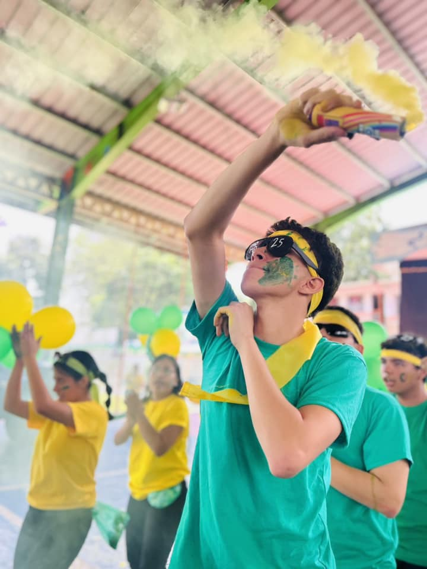
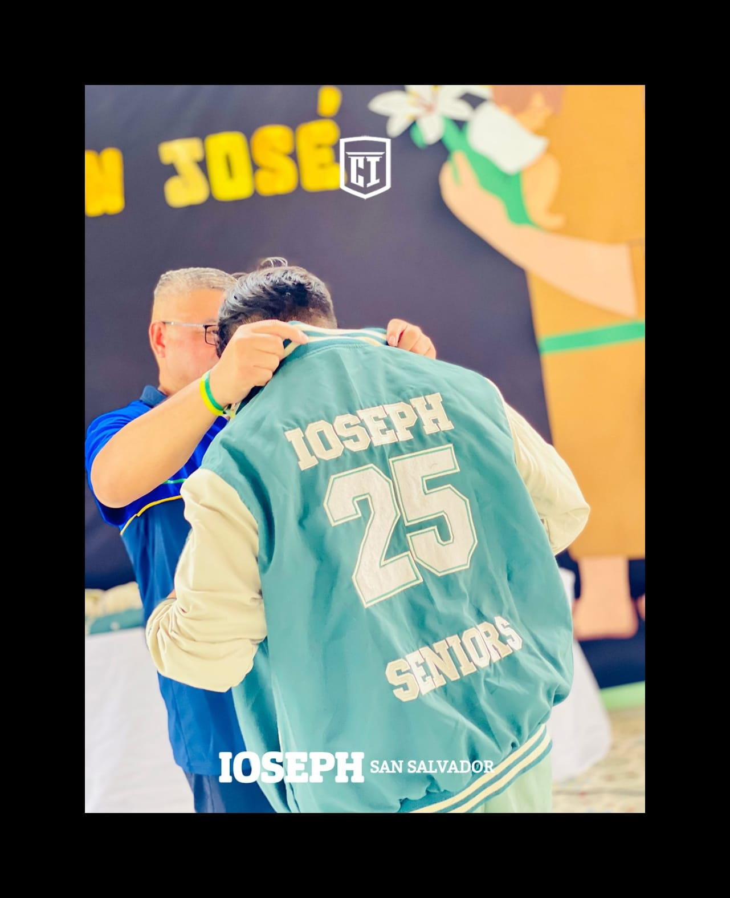

Con gran entusiasmo, presentamos la primera entrega de la revista oficial de la Promo 2025, una edición especial creada con dedicación y esfuerzo por nuestra comunidad estudiantil. En este capítulo inaugural, exploramos los momentos más memorables, anécdotas y logros que han marcado nuestro camino hasta ahora. Bajo la clave 501 A, esta edición simboliza el inicio de un proyecto que busca capturar la esencia de nuestra promoción, destacando historias inspiradoras, entrevistas exclusivas y un recorrido por los eventos más significativos.
 






